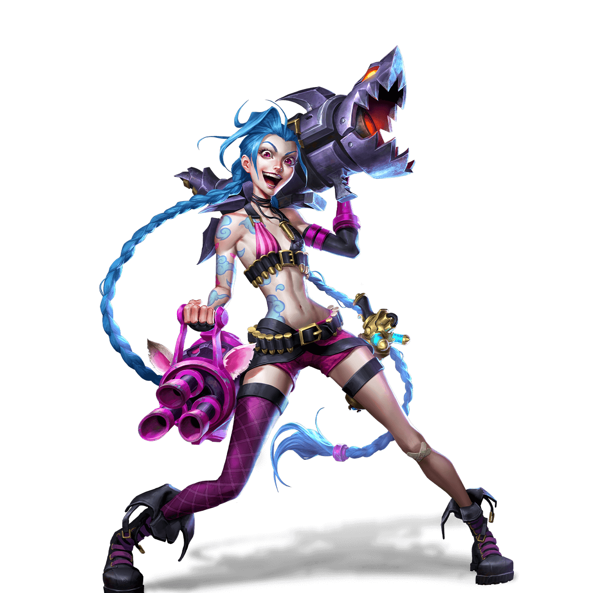

Região
ZAUN
Sua História - Jinx
Embora muitos vejam Jinx apenas como uma maluca carregando um monte de armas perigosas, alguns ainda se lembram dela como uma menina relativamente inocente de Zaun; uma garota curiosa, cheia de grandes ideias, e que nunca conseguiu se encaixar nos padrões. Ninguém sabe ao certo o que aconteceu para transformar aquela doce menina em uma lunática, famosa por seus arroubos de destruição. Mas depois que Jinx surgiu na cena de Piltover, seu inegável talento para espalhar o caos e causar anarquia se tornou lendário.
